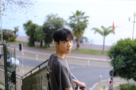

-
Welcome to Sam's personal page
I just finished my MSc degree in Computer Science at Edinburgh University. I'm interested in autonomous systems, robotics，human-computer interaction and smart wearables. I'm currently looking for a PhD position where I can fulfill my academic pursuit. I always have passion for the field I'm interested in and immerse myself in projects, enjoy the process, and cherish every achievement.
I have been improving my skills and enriching my experiences with the guidance of systematic courses through the study of undergraduate and graduate degrees. In addition to accumulating a lot of programming experience, I am gradually gaining deep insight into various areas of computer science while improving my academic skills and mindset.
Skills:
Embedded system, PyTorch, Sklearn, Computer graphics, Text search engine, Web applications, Java, C++, SQL.
Education:
Edinburgh University - M.Sc. Computer Science (Merit)
Lancaster University - B.Sc. Computer Science (First Class honor)
Beijing Jiaotong University - B.Eng. Computer Science
 In spare time, I really enjoy landscape photography and road trips, I always take my camera with me wherever I go. Please view few of my photography selections in the gallery. -
-
Simulation Environment for Interactive Task Learning (07/2022-09/2022)
In recent years, a new field of artificial intelligence called Interactive Task Learning (ITL) has proved that machine can learn unseen new tasks through interactions with human in daily language and gestures. This project present a unified, specifically designed simulation platform for ITL based on Unity and ROS2.
In this simulation environment, there is an easy-to-use chat-box GUI like MSG on mobile apps for instructors giving instructions to robot agents and displaying response messages. Also, the instructor can control a player to move freely in the 3D simulated scene. The player can point at arbitrary objects to give the robot agent a hint about the task. Besides, to further support movement interaction, the player can move things in the 3D scene and let the robot agent observe the change.
The environment integrates a vision pipeline that helps the robot agent make task plans. The vision pipeline comprises segmentation, spatial analysis and pose-estimation modules. The segmentation model is google’s ’Detection 2’, where the dataset used to train it contains 200 everyday life items. Users can simply change parameters for segmenting different target objects. The pose-estimation model is a VGG-16-based neural network trained by datasets that can be easily generated from Unity. Users can customise and refine their pose-estimation model by generating a customised dataset from the same Unity simulation scene with the help of the Unity perception camera and labeling plugins.
Indoor Robot Positioning and Navigation System Based on Surveillance Camera and A-Star Algorithm (01/2021-04/2021)
Indoor navigation based on simple and cheap sensors is the key to reduce the cost for indoor mobile robots. This project come up with an indoor robot platform control system based on one ceiling camera and a server to perceive and process the indoor environment to navigate robot clusters.
This project deploys grid method to construct the indoor navigation map. The system use morphological alterations and colour extraction to perceive possible obstacles, using improved Bresenham algorithm, label all obstacles in grid map. The system use KCF (Kernelized Correlation Filters) tracker to segment the target image area. For location tracking and direction tracking, this project compares different method and algorithms, such as coloured beacon extraction and electronic-compass. A-Star algorithm is applied for obstacle avoidance and path finding.
RoboMaster Robot Competition (09/2020-12/2020)
RoboMaster is an annual intercollegiate robot competition founded and hosted by the drone tech giant DJI. Our team represents our school against other teams from Chinese universities. I lead the electronic control group and responsible for designing and implementing the target tracking system and moving and teleportation unit.

The teleportation and moving control unit enables the operator using the computer terminal give simple instructions to robot executing complex movements. It also supports a real-time video streaming module for observing the combating scene. The robot onboard controller is STM32F105R8T6, it connects to sensors, servos through multiple ports like CAN, UART, variable-voltage PWM and SWD. The main controller is connected to an Nvidia Jetson module (Ubuntu+OpenCV), which helps the robot tracking the target position.
College Smart Car Competition, Beijing Jiaotong University (2020-2021)
The competition originated in South Korea. It is an extracurricular science and technology competition for college students with the HCS12 single-chip microcomputer as the core. The organizing committee provides a standard car model, a DC motor and a rechargeable battery. The participating teams need to make a smart car that can automatically identify the path, The winner is the fastest to complete the course without going off the track.
Our smart car is built based on the 'Freescale S12' controller, integrated with Hall sensors and a binary camera. I was responsible for the tracking algorithm and all control programming while my teammate built the circuit board. We obtained the first prize in the 2021 match and the third prize in the 2020 match.
Java Game Development Based on JSFML (06/2020-08/2020)
The game (Warriors Expedition) is developed by our five memebers, and it belongs to RPG (Roal play game) with tower defence elements. It is implemented in 2D pictures with 3D visual effects. The game is based on the Java JSFML package without using a standard game engine or third-party game libraries.
I was responsible for the following components, including character control, collision detection, character combat, bullet tracking algorithm, visual effects, level design, and score ranking modules. The character combat module raises concurrency problems when the multiple parties involved should be computed synchronously. It is solved by concurrent HashMap, semaphore and locking mechanism. I also designed GUI and game animations. In addition, I created an algorithm to convert map images to binary files for map edge detection.
Online Shopping Platform Based On Distributed System (06/2020-07/2020)
Responsible for front-end page design and development, database cluster deployment. Gain more in-depth practical experience of MVC framework, RPC system, Middleware, DDBMS and cryptography. Use multiple master nodes, AES, MD5 encryption, Fault tolerance and failure recovery mechanism.
-
Contact